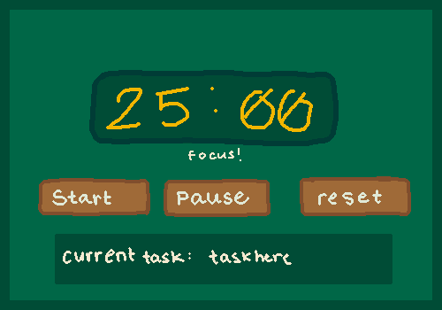
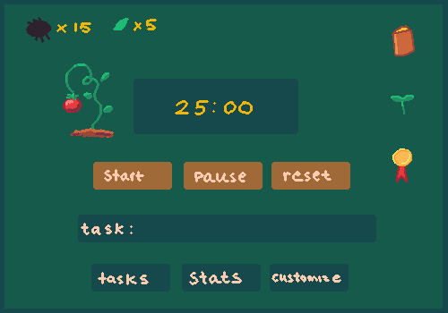

I am currently working on a pomodoro timer project. It is a simple app that uses the pomodoro technique to help you focus on tasks.
I used the pomodoro technique throughout my first two terms at RRC, and I thought I could create something similar, while
also have a game mechanic to it to have users get rewarded for being productive.
It is still very much in it's early stages, but I am very excited to see what it will become.
You can view the repository here.
Here are some initial concept arts for the game and timer:

